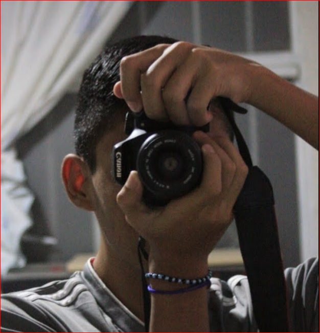
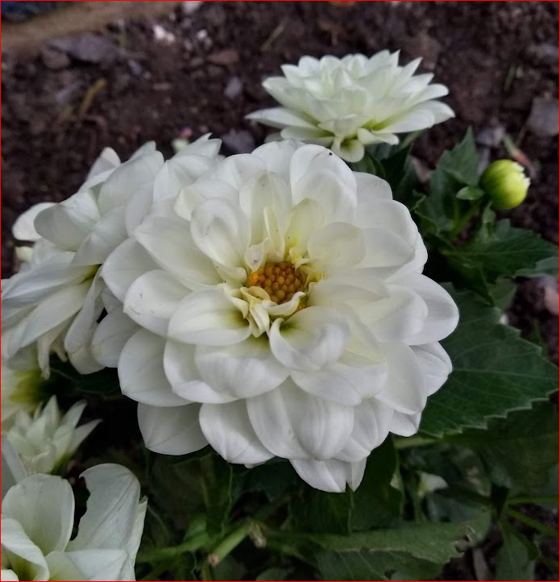

Soy Carlos Raul Lopez Avalos, naci el 6 de Diciembre del año 2002, Actualmente tengo 21 años. Durante mi recorrido en la escuela me he destacado por ser responsable, trabajador y dedicado, eso me ha llevado a obtener reconocimientos por aprovechamiento academico. Perdi un año de prepa ya que no alcance los puntos que se exigian pero no me di por vencido ya que intente el proximo año y logre quedar, durante mi estadia en la prepa obtuve buenos momentos y malos momentos, pero de la Secundaria no puedo decir lo mismo ya que sufri bullying por solo dedicar mi tiempo a mis estudios. Actualmente me encuentro estudiando una ingenieria en la UTL y es pesado pero hay buenos recuerdos en el trayecto que llevo hasta ahora,tengo una medalla por destacamiento academico que se me dio en la primaria. He participado en tablas ritmicas, concursos de oratoria y carreras de atletismo, soy muy bueno en basket, tambien he participado en concursos de deletreo estuve un año y medio en un curso de fotografia profesional eso hizo que desarrollara un gusto por la fotografia.
Soy el menor de 5 hermanos y una hermana, tres de mis hermanos son ingenieros, uno de ellos es Ingeniero en Procesos Industriales, el segundo es ingeniero en Mantenimiento Industrial y el ultimo es ingeniero en Tecnologias de la Informacion, mis otros dos hermanos y mi hermana no tuvieron esa oportunidad ya que no pudieron por problemas economicos, cabe recalcar que mi hermana lamentablemente fallecio tiempo despues de dar a luz, mi madre es ama de casa y mi padre era carpintero pero ya esta jubilado, tambien hay tengo que decir que tengo 4 sobrinos.
Tengo varios pasatiempos que son los siguientes...
1-Me gusta el basquetball.
2-Me gusta hacer ejercicio.
3-Me gusta la fotografia.
4-Me gusta la medicina (el area de neurocirugia).
5-Me gusta cantar.
6-Me gusta mirar los atardeceres y tomarles fotos al igual que las flores.
7-Me gusta bailar (aunque no se bailar).
8-Me gusta cocinar (aunque casi no lo haga).
Y pues esto es algo de lo que me gusta hacer.
Me gustaria visitar España o Canada, pero me gustaria mas visitar la playa con mi novia.
El lugar que no visitaria nunca es Australia ya que hay muchos animales peligrosos y a mi me gusta vivir y aun quiero explorar lugares.
Una de mis canciones favoritas es "Locked Out of Heaven" de Bruno Mars.
Otra de mis canciones favoritas es "The Hills" de The Weeknd.
Una de mis peliculas favoritas es la de "Son como niños" ya que cuando la vi estaba en secundaria y me parecio muy divertida. Muestra como los niños pueden mejorar con actividades al aire libre en lugar de estar siempre frente a una pantalla, sin embargo parece difícil que los jóvenes y adultos se lleguen a interesar por esta comedia débil y con elementos vulgares que socavan los mensajes positivos que pudiera tener.
Otra de mis peliculas favoritas es Zombieland, una comedia que trata acerca de zombies. Después de que un virus transforma a la mayoría de las personas en zombis, los humanos sobrevivientes deben luchar contra los muertos vivientes hambrientos. Cuatro sobrevivientes, Tallahassee y sus amigos, Columbus, Wichita y Little Rock, respetan una serie de reglas de supervivencia y estrategias para matar zombis mientras se dirigen a un refugio seguro en Los Ángeles.
Mi familia llego a Leon hace 27 años pero ellos son originarios de un rancho llamado "el chocolate", despues de ahí mi familia se dedico a salir adelante. Soy el menor de 5 hermanos y una hermana, tres de mis hermanos son ingenieros, uno de ellos es Ingeniero en Procesos Industriales, el segundo es ingeniero en Mantenimiento Industrial y el ultimo es ingeniero en Tecnologias de la Informacion, mis otros dos hermanos y mi hermana no tuvieron esa oportunidad ya que no pudieron por problemas economicos, cabe recalcar que mi hermana lamentablemente fallecio tiempo despues de dar a luz, mi madre es ama de casa y mi padre era carpintero pero ya esta jubilado, tambien tengo que decir que tengo 4 sobrinos, una sobrina va en la secundaria y un sobrino esta en la primaria para ya pasar a la secundaria las otras dos sobrinas aun estan chiquitas.
Mi familia esta conformada por:
1-Me gusta el basquetball.
2-Me gusta hacer ejercicio.
3-Me gusta la fotografia.

4-Me gusta la medicina (el area de neurocirugia).
5-Me gusta cantar.
6-Me gusta mirar los atardeceres y tomarles fotos al igual que las flores.

7-Me gusta bailar (aunque no se bailar).
8-Me gusta cocinar (aunque casi no lo haga).